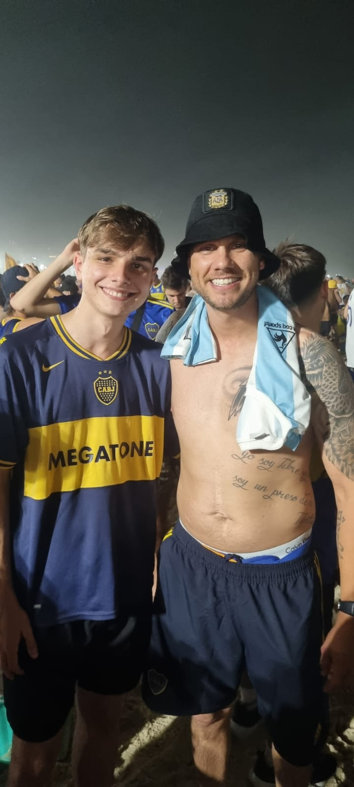

Me llamo Thomas Zyska, tengo 19 años, vivo actualmente en San isidro, Zona Norte de Buenos Aires. Estoy cursando la carrera de Licenciatura en Gestion TI en la Universidad Argentina de la Empresa (UADE). Me gusta mucho pasar tiempo en la computadora, entrenar y el futbol. Soy hincha de Boca desde que naci practicamente, aunque sera algo que expandire mas adelante en esta pagina.
Tengo muchas aficiones que considero importantes en mi vida. Sobre todo para que me ayuden a despejar la mente, relajarme y por supuesto ser feliz, que considero lo primordial en la vida. Considero que alguans de mis aficiones son:
El fútbol, que es mi deporte favorito, me gusta mucho jugarlo y verlo. Lo considero una de las cosas que mas aprecio hacer, debido a la conexion que genera con la gente, especialmente amigos y familiares, aunque tambien con desconocidos que muchas veces uno se encuentra en la cancha y pueden llegar a ser amigos. Como hincha de Boca, he pasado malas y buenas cosas que me ha dado el club, pero siempre uno mantiene el amor por los colores y la camiseta.
La música, la considero el pasatiempo que mas uso en mi vida, me acompaña cuando viajo a la facultad, cuando voy o estoy entrenando o incluso cuando estoy en casa. Me gusta mucho el trap, especialmente artistas como Trueno, el que considero mi favorito, pero tambien como Duki, Ysy A, Wos, Milo, etc.
Jugar a videojuegos es de las aficiones que mas realizo en mi tiempo libre, mas que nada disfruto jugando con amigos que a lo mejor no veo todos los dias personalmente, pero comparto mucho tiempo con ellos jugando de forma virtual.
Por ultimo, considero a la programacion como una de mis aficiones, ya que me gusta mucho y me entretiene. Me gusta mucho aprender cosas nuevas y poder crear cosas con codigo, es algo que me apasiona y me gustaria dedicarme a eso en un futuro, por eso mismo estoy estudiando la carrera que estoy estudiando.

El Club Atletico Boca Juniors, considero que es una de las cosas mas importantes en mi vida, ya que me ha dado muchas alegrias y momentos inolvidables. Desde que tengo uso de razon, he sido hincha de Boca, debido a mi familia que siempre lo fue, especialmente mi tio, que me llevaba a la cancha desde muy chico y pude compartir muchos recuerdos con el.
Uno de los mas importantes que recuerdo, fue la final de la Copa Libertadores 2023 contra Fluminense, que la vivi con el en la cancha y tambien toda la previa, como el banderazo el dia antes en Copacabana y la llegada al estadio con la barra. Fue un dia inolvidable y aunque no pudimos llevarnos la copa, lo vivi de una manera que nunca voy a olvidar en mi vida, la pasion y el amor por los colores que senti ese dia, creo que nunca vivire algo igual.
A diario, continuo yendo a la cancha siempre que puedo, ya sea con amigos o familiares, y disfruto mucho de cada partido que veo, ya sea en la Bombonera o en cualquier otro estadio. Boca es una parte fundamental de mi vida y siempre lo sera.